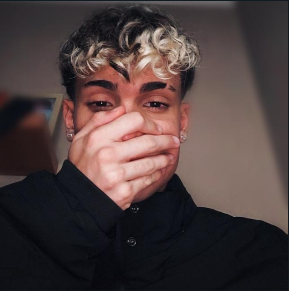
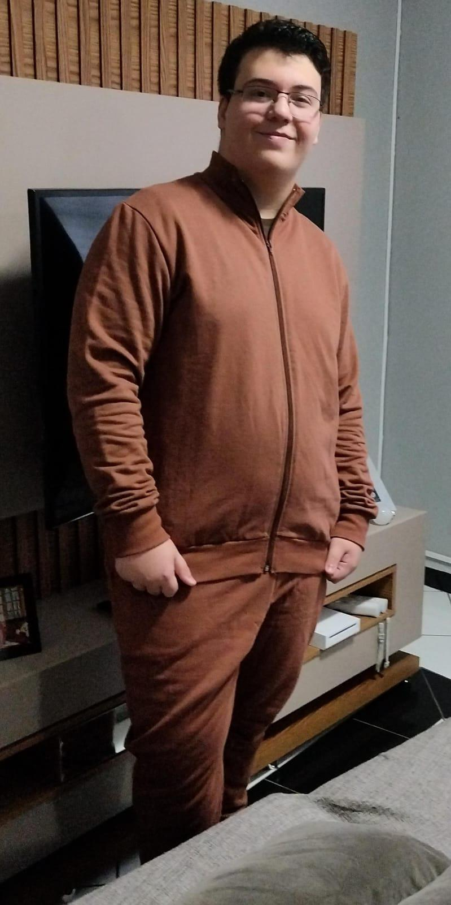

Tomiate: "Sou ajudante do entrevistador e para mim o trabalho foi uma experiência nova, pois pude saber de diversas opiniões sobre o assunto e entender melhor o ponto de vista dos professores."

Cauê: "Fui um dos coordenadores-chefes do projeto, desenvolvedor do site e coordenador das pesquisas relacionadas ao assunto das entrevistas. Classifico como uma ótima experiencia, pois agregou em muito em como faço para criar sites hoje em dia, além de absorver muito conhecimento em torno de programação e afins."
Alexandre: "Ajudei o Cauê com o Site, e fiz algumas partes nas apresentações, fazer o site foi uma experiência única para mim, pois nunca havia feito um site junto com outra pessoa e senti que conseguimos colaborar um com o outro e obter um resultado muito bom."
Guilherme: "Entrevistei os professores para o nosso PodCast e fiz algumas pesquisas de dados que ajudaram na realização do nosso questionário e perguntas que foram feitas aos docentes.
Jonas: "Gravei as entrevistas e ajudei a fazer algumas perguntas, para mim foi uma experiencia totalmente nova e muito legal, pois pude conhecer e conversar mais com os professores."

Samuel: "Ajudei com pesquisas primordiais, auxílio nas entrevistas e mixagem de áudio. Minha experiência no trabalho foi boa mesmo entrando um tempo depois das pesquisas começarem foi um bom trabalho."